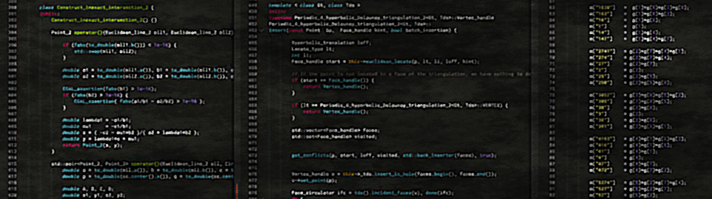

Periodic and non-periodic Delaunay triangulations in the hyperbolic plane

I am a ghost
Welcome!
This page contains links to the Github repositories with publicly available code for the computation of periodic and non-periodic triangulations in the hyperbolic plane.